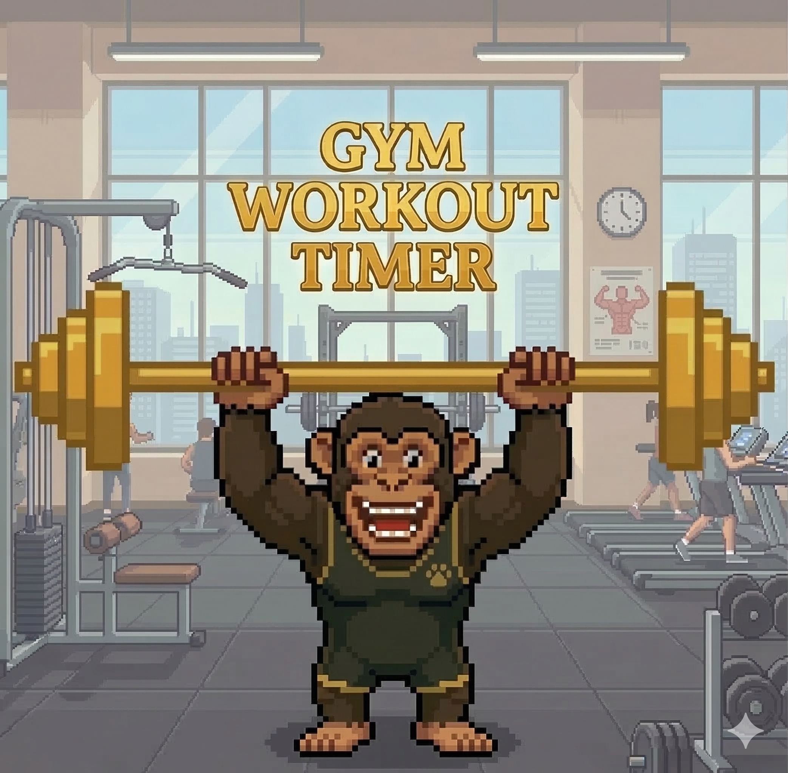

Gym Workout Timer
Garmin Connect IQ
Aplikacja na zegarki Garmin do prowadzenia treningów siłowych.
Konfiguracja planów treningowych
Wsparcie
Zalety
Działa bez żadnych zewnętrznych aplikacji na iOS ani Android — potrzebujesz tylko zegarka Garmin i przeglądarki.
Plany tworzysz w przeglądarce przez Settings UI — bez instalacji czegokolwiek.
Otwórz Settings UI →Ćwiczenia wyświetlane kolejno — zawsze wiesz co teraz i co dalej.
Podgląd tętna w formie wykresu po zakończeniu treningu.
Konfiguracja
Tworzenie planu treningowego
Plan to zestaw ćwiczeń wykonywanych kolejno. Możesz stworzyć wiele planów (np. Push, Pull, Nogi) i zapisać je wszystkie w jednym ciągu konfiguracyjnym.
-
1
Nadaj nazwę planowi
Wpisz nazwę w polu Plan Name (np. „Push Day", „Nogi"). Maksymalnie 30 znaków.
-
2
Dodaj ćwiczenia
Kliknij „+ Add Exercise" — otworzy się okno wyboru ćwiczenia z dwoma trybami:
-
3
Ustaw parametry ćwiczenia
Ustaw liczbę serii, liczbę powtórzeń (lub MAX — ćwiczysz do upadku bez odliczania), czas przerwy między seriami oraz czas pracy (0 = bez limitu czasu). Każde ćwiczenie w planie konfigurujesz niezależnie.
Gdy parametry są gotowe, kliknij „Add to Plan".
-
4
Edytuj i zmieniaj kolejność
Kliknij dowolne ćwiczenie na liście — otworzy się okno edycji. Możesz zmienić parametry, przesunąć ćwiczenie w górę lub w dół, albo je usunąć.
-
5
Loop training (opcjonalnie)
Zaznacz „Loop training" i podaj liczbę powtórzeń (2–20), jeśli zegarek ma automatycznie powtórzyć cały plan kilka razy z rzędu.
-
6
Dodaj plan do listy
Kliknij „Add Plan to List" — plan trafia do Listy Planów, a edytor czysty czeka na kolejny trening. Powtórz kroki 1–6 dla każdego planu.
Lista planów
Wszystkie gotowe treningi zbierają się na Liście Planów. Co możesz tam zrobić:
Wczytywanie planu z ciągu
Masz gotowy ciąg konfiguracyjny z poprzedniej sesji lub od innej osoby? Załadujesz go bez ręcznego wpisywania ćwiczeń.
-
1
Wklej ciąg w pole na górze
W sekcji „Load plan from string" wklej skopiowany ciąg konfiguracyjny (wygląda jak:
Push Day|Bench Press,4,8,90,0|…). -
2
Kliknij „Load & Edit"
Plan wczytuje się do edytora — zobaczysz nazwę, listę ćwiczeń i parametry. Możesz swobodnie edytować wszystko przed zapisem.
-
3
Dodaj do listy i generuj
Po ewentualnych zmianach kliknij „Add Plan to List", a następnie „Generate Config String", by uzyskać gotowy ciąg do wklejenia w zegarek.
Wgrywanie planów na zegarek
-
1
Skopiuj ciąg konfiguracyjny
Po kliknięciu „Generate Config String" pojawi się ciąg tekstowy. Kliknij „Copy to clipboard".
-
2
Wklej w Garmin Connect Mobile
W aplikacji Garmin Connect Mobile przejdź do: Moje Urządzenie → Aplikacje → GymWorkoutTimer → Ustawienia. Wklej tekst w pole „Plan Configuration" i zapisz.
-
3
Zsynchronizuj zegarek i trenuj
Zsynchronizuj zegarek z Garmin Connect. Plany pojawią się na ekranie SELECT PLAN — wybierz trening, naciśnij Start i daj się poprowadzić.